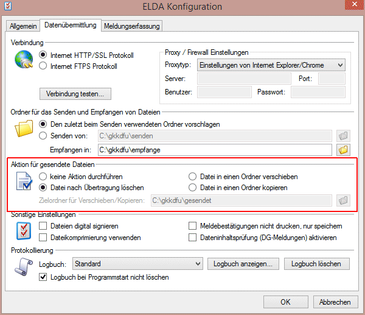

Ø Name
Eingabe des Durchführenden
Ø Straße, Straße 2,
Hier kann die Adresse des Absenders eingetragen werden.
Ø Land
Aus der Auswahllistbox kann der Landescode des Staates ausgesucht werden, in dem der Betrieb seinen Standort hat.
Ø PLZ1, PLZ2, Ort
Eingabe der restlichen Adresse.
Ø Telefon
Eingabe der Telefonnummer.
Ø Fax
Eingabe der Faxnummer.
Ø E-Mail:
In diesem Feld kann die e-Mail-Anschrift hinterlegt werden.
Ø ELDA Seriennummer
ELDA Seriennummer des übermittelnden Betriebes.
Ø Pfad ELDA "senden"
In diesem Feld kann ein fixes Verzeichnis eingetragen werden, in dem die Ausgabedatei für die elektronische Übermittlung gestellt werden soll. Im Normalfall wird das Verzeichnis C:\GKKDFU\SENDEN\ verwendet. Durch Drücken der F9-Taste kann nach allen bereits vorhandenen Verzeichnissen gesucht werden. Bleibt das Feld leer, wird das aktuelle Programmverzeichnis als Ausgabeverzeichnis verwendet.
Achtung:
Damit das richtige Verzeichnis verwendet wird, muss ein abschließender Backslash eingetragen werden.
Ø Pfad ELDA "empfange"
Hier wird jener Pfad bekanntgegeben, in dem die Rückmeldungen der ELDA gespeichert werden. Im Normalfall ist dies das Verzeichnis: C:\GKKDFU\EMPFANGE\. Wird dieser Pfad bekannt gegeben, so können Meldebestätigungen als auch Clearingmeldungen direkt in der WinLine im Menüpunkt "Rückmeldungen" - zu finden unter
1 Formulare
1 Rückmeldungen
gesichtet werden.
Ø Mandant für ELDA Datei
Wird die Checkbox "Mandant für ELDA Datei" aktiviert, wird bei den unter "Ausgabe der elekt. Meldungen f. Elda" erzeugten Meldungen an den Dateinamen zusätzlich die Mandantennummer angehängt. Erzeugt man somit eine ELDA Meldung im Mandanten 300M und die Checkbox ist aktiv, wird der Dateiname "CWLELDA-300M.GKK" vergeben. Dies wird zum Beispiel dafür benötigt, wenn es mehrere LOHN-Mandanten gibt und vermieden werden soll, dass die CWLELDA.GKK Dateien noch vor der Übermittlung von einem anderen Mandanten überschrieben werden.
Achtung:
Um zu vermeiden, dass es zu mehrfachen Übermittlungen derselben Datei kommt (da die Dateien nun nicht mehr automatisch überschrieben werden, sondern mit der jeweiligen Mandantennummer im "Senden-Ordner" für die Übermittlung abgelegt wird), sollten die Einstellungen direkt bei ELDA unter den Konfigurationseinstellungen (Extras/Konfiguration/Datenübermittlung) angepasst werden (zum Beispiel auf "Datei nach Übertragung löschen").

Hersteller für L16-Übermittlung
Diese Felder müssen nur dann ausgefüllt werden, wenn die Ausgabe der L16-Belege von einem Dritten (z.B. Steuerberatungskanzlei) erfolgt.
Ø Finanzamt
Aus der Auswahllistbox kann das für den Betrieb zuständige Finanzamt gewählt werden.
Ø Steuer-Nr.
Eingabe der Steuernummer, die vom Finanzamt zugewiesen wird.
Die Kombination aus Finanzamtsnummer und Steuernummer wird auf ihre Richtigkeit geprüft.
Ø DVR-Nr.
Datenverarbeitungsregisternummer des Betriebes.